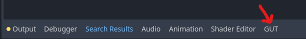

Quick Start
This page contains brief descriptions of many of GUT’s features. Most sections have a “More information” link where more in depth documentation can be found.
Install
Add GUT to your project by downloading the GUT - Godot Unit Testing package in the Godot Asset Library (top center of Godot screen). For more details and alternate install methods, check the install page.
Creating Two Example Tests
For purposes of this Quick Start guide, create a script file res://test/unit/test_example.gd with the following content:
extends GutTest
func test_passes():
# this test will pass because 1 does equal 1
assert_eq(1, 1)
func test_fails():
# this test will fail because those strings are not equal
assert_eq('hello', 'goodbye')
Run Tests
Open the GUT panel

Configure the directories where your tests are in the GUT Panel settings (you may need to scroll down to see this section). If you created the example test above, this would be in
res://test/unit. A good strategy with GUT is to separate unit and integration tests into separate directory structures (such asres://test/unitandres://test/integration). Once you get a lot of tests, this will make it easier to run the fast unit tests frequently, and the slower integration tests only as often as is useful.
Click “Run All” to run all your tests.
Open a test script and click the button with your test script’s name (
test_test.gdin image below) to run only that test script.Open a test script, put the cursor inside a test function, click the button with your test function’s name (
test_fails_when_number_not_equalin the image below) to run just that one test.

Mouse-over labels and buttons in the GUT panel for more information. You can even set keyboard shortcuts for all of the GUT panel actions.
You can also run tests via the command line and through VSCode
Creating Tests
Much more information is available in the Creating Tests document, but here are some basics:
All test scripts must extend
GutTest(res://addons/gut/test.gd) script supplied by GUT.
extends GutTest
By default, all test files must begin with
test_to be found by GUT. You can change the prefix and suffix of test files in the GUT settings.
There is a plethora of asserts and helpers that are listed here
Setup and teardown methods:
before_allbefore_eachafter_eachafter_all
Any method that starts with “test” will be run as a test.
extends GutTest
func before_all():
gut.p("Runs once before all tests")
func before_each():
gut.p("Runs before each test.")
func after_each():
gut.p("Runs after each test.")
func after_all():
gut.p("Runs once after all tests")
func test_assert_eq_number_not_equal():
assert_eq(1, 2, "Should fail. 1 != 2")
func test_assert_eq_number_equal():
assert_eq('asdf', 'asdf', "Should pass")
You can use inner classes to group tests together. The class name must start with “Test” and extend test.gd.
extends GutTest
class TestSomeAspects:
extends GutTest
func test_assert_eq_number_not_equal():
assert_eq(1, 2, "Should fail. 1 != 2")
func test_assert_eq_number_equal():
assert_eq('asdf', 'asdf', "Should pass")
class TestOtherAspects:
extends GutTest
func test_assert_true_with_true():
assert_true(true, "Should pass, true is true")
Doubles/Spies/Stubs
More Information: Doubles, Spies, Stubs
You can make a double of just about anything. double returns a loaded class/scene, not an instance. Doubles extend the object to be doubled and have empty implementations for all methods defined in the script or parent scripts, but not parent Godot methods that are not overridden.
var Foo = load('res://foo.gd')
var MyScene = load('res://my_scene.tscn')
var double_foo = double(Foo).new()
var double_scene = double(MyScene).instantiate()
You can stub your double to do different things. Unstubbed methods that are called generate log messages.
var double_foo = double(Foo).new()
stub(double_foo.bar).to_return(42)
stub(double_foo, "something").to_call_super() # do what method would normally do
stub(double_foo.other_thing).to_return(77).when_passed(1, 2, 'c')
stub(double_foo.other_thing.bind(4, 5, 'z')).to_do_nothing()
You can spy on your doubles with various asserts and helpers.
var double_foo = double(Foo).new()
...
assert_called(double_foo, 'bar')
assert_not_called(double_foo, 'something')
assert_call_count(double_foo, 'call_me', 10)
# assert other_thing called with parameters in array.
assert_called(double_foo, 'other_thing', [1, 2, 'c'])
# Get an array of the parameters sent to the last
# call to call_me
var called_with_last = get_call_parameters(double_foo, 'call_me')
# get the parameters passed to the 4th call of `call_me`
var called_with_4 = get_call_parameters(double_foo, 'call_me', 4))
Partial Doubles
Partial doubles have all the same properties of a double except they retain the source functionality by default. You can stub and spy on them just like a double, but anything not stubbed will behave as if it wasn’t a double.
var double_bar = partial_double(Bar).instance()
# the foo method will do nothing always now
stub(double_ba.foo).to_do_nothing()
# the something method will return 27 when passed 32,
# but act normally when passed anything else.
stub(double_bar.something).to_return(27).when_passed(32)
# example of spying
assert_called(double_bar, 'other_thing')
Parameterized Tests
You can create tests that will be run multiple times and be passed multiple values.
The test must have one and only one parameter.
That parameter must be defaulted to call
use_parameters.The value passed to use_parameters must be an array.
Each element in the array will result in one execution of the test with that element passed in.
var test_params = [[1, 2, 3], [4, 5, 6]]
func test_with_parameters(p=use_parameters(test_params)):
assert_eq(p[0], p[2] - p[1])
# The first array contains the name of the parameters, the 2nd array contains the values.
var named_params = ParameterFactory.named_parameters(['a', 'b'], [[1, 2], ['one', 'two']])
func test_with_named_params(p=use_parameters(better_params)):
assert_ne(p.a, p.b)
There are helpers to make your parameters more readable.
Await
You can use await in your tests to allow time to pass before making assertions. This can be useful if you need to wait for some interaction to play out, a signal to be emitted, or wait for things to happen in the next frames, such as physics process or draw.
If you want to wait for a certain amount of time you can use wait_seconds.
await wait_seconds(10)
You can await to a signal or an amount of time, whichever comes first with wait_for_signal. This ensures that your tests do not hang when a signal is not emitted.
var my_obj = load('res://my_obj.gd').new()
await wait_for_signal(my_obj.some_signal, 3)
You can also await for a number of physics frames using wait_physics_frames. It’s best to wait at least 2 frames as waiting one frame can be flaky.
await wait_physics_frames(5)
Or a number of idle/process frames using wait_process_frames.
await wait_process_frames(10)
Leak Testing and Memory Management
Call autofree or autoqfree on anything you want to be automatically freed up after your test. These return whatever you pass it so you can save a line of code!
var my_node = autofree(Node.new())
autofree calls free on the object and autoqfree calls queue_free.
If you plan to add your object to the tree you can use the add_child_autofree and add_child_autoqfree methods to add them as a child of the test script and free them at the end of the test.
var my_node = add_child_autofree(Node2D.new())
Orphan counts are displayed after each test/script that generates orphans and at the end of the run. If you don’t see output, then you don’t have any orphans! You can disable this feature if you want.
All objects created with double or partial_double are freed automatically after a test finishes.
You can assert you didn’t make any new orphans with assert_no_new_orphans. assert_no_new_orphans doesn’t know about objects passed to autofree so they will be counted if they are not in the tree.
func test_freeing():
var node = Node.new()
assert_no_new_orphans('this one fails')
node.free()
assert_no_new_orphans('this one passes')
# If you queue_free then you have to wait for it to be freed.
func test_queue_freeing():
var node = Node.new()
node.queue_free()
assert_no_new_orphans('this one fails')
await(wait_seconds(.1))
assert_no_new_orphans('this one passes')